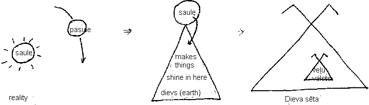

|
Ancient Latvian Metaphysics
By Anda Vitols 2010 This essay is my interpretation of most ancient Latvian thoughts on metaphysical questions. Research was complied 1998 to 2004. Structure of the Universe
The sun (saule) is the sun we see in the sky. Earth is located under the sun, so is called “pasaule”, which literally means under the sun. The ground is called “zeme”, and “pazeme” means under ground. Things we perceive on the ground that grow are called “augumiņš” (growing in diminutive). It is believed that things grow naturally (dabiski) in nature (daba). Our bodies are called “ķermenis” and people are called “cilvēki”. When people die, they are buried underground (pazeme), or above ground (virszemes) in what is called a grave hill (kapu kalns). In the sky are god’s shining entities (dievības spīdekļi). They reflect the laws of nature. The main spiritual entities within the whole (dievs) are Laima, goddess of fate, Māra, goddess of natural things on earth, and Mātes, goddesses of specific natural phenomenon on earth. The after life There are two realms of life within the whole, dievs. This life while our bodies are alive on earth, and the after life, when our bodies have died. They are called “šī saule” meaning “this sun” and “viņa saule” meaning “their sun”. This sun (šī saule) is life here on earth as we understand and perceive it. “This sun” shines, turning everything into colour. Their sun (viņa saule) is also called “aizsaule”, meaning “behind the sun”. This is the other life that we cannot perceive. “Their sun” provides just enough light for outline shadows that are grey. No light, no colour. This is the realm we live in after our bodies die here on earth. It is called the country of the shadowed spirits (veļu valsts). “Veļi” are spiritual entities of deceased that appear as shadows. These shadows are fused entities of body, mind and breathing spirit (dvēsele). They are also called “velīši”, the diminutive form, and “dievietes” which is the diminutive of dievs (god). They are looked after by the goddess mother of dead spirits (Veļu māte). The word “veļa” also means “laundry”. Cloths do not have form anymore, or move anymore, when their owners, people wearing them, are gone. Similarly, velīši, are individual spirited shadows of former people (cilvēki). In diagram below, veļu valsts, the country of shadowed spirits, is within gods fence (dieva sēta). Gods fence (dieva sēta) is with permeable borders, but “country of shadows” (veļu valsts) is without permeable borders. To move in or out of veļu valsts, one has to change structure to velis. 
“velu valsts” (country of shadows) is fence (seta) is without permeable borders“dieva seta” (god’s fence) is with permeable borders To move in-out of “velu valsts”, one has to change structure to velis. Life and Death Cycle
This is my interpretation of life-death cycle rooted in ideas of Latvian folklore. Life-death cycle in nature What is required to start new life? To start new life, the principle of crossing (krustošanās) is required. It is described with ancient graphic called “jumis”. Jumis has root word “jumpts” which means roof. Roofs protect things. The jumis graphic is similar to god’s fence (dieva sēta) roof. Calmness is also required for all life to begin; for a seed to properly implant and grow. Water and Jumis offer calmness, so these are symbols used for starting all living things. Some dainas describe humans coming from water. Roof (jumis) and fences (dieva sēta) offer the security and protection for proper growth. For plant life to begin, many Latvian folklore symbols are available. On the farm, in fall, a small part of the crop is tied together to look like “jumis” roof and left on the field. It symbolizes protecting seeds over the winter for next years growth. In spring, the colour black symbolizes fertile soil, and black horses are considered hard working, to help plant seeds. Once the seeds are planted, the sun shines its life essence. The seeds come alive and grow. For human life to begin, yellow yolky colour is symbolic of where seeds begin to grow. For example, honey bees and amber. Oak trees covered with bees, is a man tree that is fertile. Women offer men sweet honey, to entice them to procreate. So metaphorically, men are carriers of seeds, and human life starts when they are planted in yellowy, sunny-looking places. Male sperm are called “sēkliņas” (seeds in diminutive). What happens when born? A light ray from god’s sun (dieva saule) begins to shine on its own within a body (augumiņš). “Augumiņš” means body in diminutive. Anything in diminutive means that it is alive with primary life essence, light. So “augumiņš” is the structure in which this sunray starts to shine. What happens when are living? The sun (saulīte) continues to shine in body (augumiņš). The body (augumiņš) continues to grow in size and complexity. It does this in two ways. First, it blossoms (zied). Blossoms grow on a sun tree (saules koks) which as a spiritual reflection of a living entity. Second, it sings (dzied). All living things breath, including plants; hence they sing. Notice that “zied’ and ‘dzied” are similar roots in Latvian. Singing is done from “dvesma” which is a place where it is easy to breath. Your “breathing spirit” is called “dvēsele”. It is the “truth” in breath. It begins growth when saulīte (sun diminutive) and augumiņš (body diminutive) unite, and begin to breath. It continues its growth throughout life. It is believed that all life forms have “dvēseles”, from grass blades to humans. There are many ways that the breathing part of your dvēsele is called. Your breath is called “elpa”. Breathing can be easy or difficult. When breathing happens easily from the spirit, it is called “dvesma”, “dvesmot”, “dvaša”, “dvašot”. When breathing from spirit is difficult, it is called “dvēst”. Notice similarities in Latvian words and their ancient meanings to life. Zied (blossom) and dzied (sing) refer to growing, and have same root. Similarly the breathing spirit has similarly rooted words (dvesēle, dvesma, dvesmot, dvašot, dvēst). What happens when you die? When a person dies the principle of conversion (pārvēšanās) occurs. The body (augumiņš) returns to earth, where it is converted back to earth materials, that can be converted into another physical entity. The breathing spirit (dzēsele) is no longer breathing, so it converts to a non-breathing spirit called “velis”. This is often called a shadowed spirit, because the light that brings colour, is no longer there. Once converted, the velis lives in “country of shadows” (veļu valsts), located in “their sun” (viņa saule), also called “behind the sun” (aizsaule), where it lives a sun’s lifespan (saules mūžš). Velis is a fused spirit, taking the outline of a body. The sun’s life (saulīte), breathing spirit (dvēsele) and outline of body (augumiņš) are fused together as a snapshot image at time of death of body. Some dainas suggest that the good thing about dying young is that you remain young for the rest of your after life. Velis continues to live a life very similar to the individual’s previous existence amongst the living. The implications are that death is not feared by Latvians. It is simply considered a transition from life on Earth, under this sun, to life in the “country of shadows” under “their sun”. The velis can move from “country of shadows” (veļu valsts) to anywhere in gods fence (dieva sēta); however, ourselves, as breathing entities on earth, can only enter the “country of shadows” (veļu valsts) when we have changed structure. For this reason, tradition has it that veļi get invited to visit us earthlings during “veļu time” (veļu laiks) in the fall. Thus sharing and communication continues with spirits of bodies that have parished. It is through the calmness of our saulītes that we are able to communicate with veļi. Summary of life-death cycle When living, we live in “this sun” (šī saule), where our sunshine (saulīte) gives us life and colour. We have a breathing spirit (dvēsele) that helps our body (augumiņš) grow and change. When die, we live in “their sun” (viņa saule) or “behind the sun” (aizsaule) as a non-breathing spirit (velis). Velis is created by just enough sunshine (saulīte) to see us in shadows. We hold onto our identity, but do not change or grow. It shows the shadow outline of our body (augumiņš). Candle analogy: In this sun (šī saule), a sunray (saulstariņš) ignites candle. Candles are like “yellow yolks”. They are ready to be “bright” and “warm”, but need to be ignited to start. Once ignited they breath, like breathing spirit “dvēsele”. Its body (augumiņš) changes as its spirit breaths. When the candle flame is extinguished, it no longer breaths and its body no longer changes. It does not provide light and warmth. It is lifeless object in “this sun”. Gods and goddesses in life cycle The gods and goddesses our life cycle are called “dieviņi”, or “dievietes”. They are in diminutive, as they are life essence. During birth, goddess Laima determines time and place of birth and death. She determines wellness of mother and newborn. It is fate. Will the mother and newborn be healthy, sick or dead by birthing? Often a gift, like flowers, is offered to Laima in birthing area to develop positive regard towards Laima. Goddess Māra helps the bodies (augumiņš) of mother and baby. While living, goddess Māra takes care of our bodies (augumiņš). All “dieviņi” help those who wish their guidance. Upon death, goddess Laima determines time of body’s (augumiņš) death. “Mother of Earth” (zemes māte) receives the body (augumiņš). “Veļu māte”, the mother of the shadowed people, receives the new converted entities, “veļi” into her country (Veļu valsts). In Latvian folklore, it is through dievs, as the balanced whole (Visuma) that all this happens. Dievs itself is “white” (balta) and is a sun’s tree (saules koks); just as we individually are. This means that dievs is constantly growing and changing, just as we are. When someone is born, it is a branch in god’s sun tree (dieva saules koks) that has started to grow. From this new growth, a “dvēsele” develops. The Latvian “dvēsele” is defined as a shining, breathing, psyche. So the concept of the soul being given to you by god, and then it has to be returned to god on death, is a non-sequator by ancient Latvian understanding. We grow onto god’s sun or life tree (dieva saules koks, dieva dzīvības koks), just as naturally as a bud grows on a branch of a tree in nature. Our essence gets “converted” into a shadowed entity consisting of the outline of our bodies, and our “dvesele” that no longer breaths, the “velis”. Home |